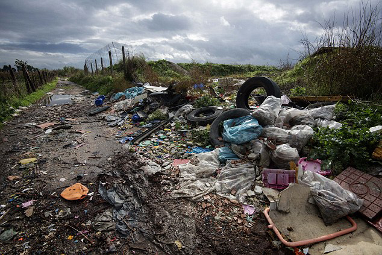
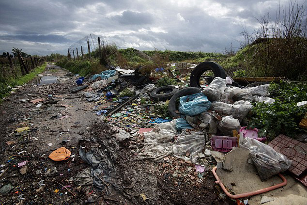

What is Pollution?
Pollution, we hear it every other day at school, college and read about it in newspapers. So what is it? Pollution occurs when
pollutants contaminate the natural surroundings; which brings about changes that affect our normal lifestyles adversely. Pollutants are the key elements
or components of pollution which are generally waste materials of different forms. Pollution disturbs our ecosystem and the balance in the environment.
With modernization and development in our lives pollution has reached its peak; giving rise to global warming and human illness.
Pollution occurs in different forms; air, water, soil, radioactive, noise, heat/ thermal and light. Every form of pollution has two sources of
occurrence; the point and the non-point sources. The point sources are easy to identify, monitor and control, whereas the non-point sources are
hard to control. Let us discuss the different types of pollutions, their causes and effects on mankind and the environment as a whole.
______________________________________________________________________________________________________________________________________________________________
Effects of Pollution
Pollution not only affect humans by destroying their respiratory, cardiovascular and neurological systems; it also
affects the nature, plants, fruits, vegetables, rivers, ponds, forests, animals, etc, on which they are highly dependent for survival. It is crucial to control
pollution as the nature, wildlife and human life are precious gifts to the mankind.
1. Environment Degradation :Environment is the first casualty for increase in pollution weather in air or water. The increase in
the amount of CO2 in the atmosphere leads to smog which can restrict sunlight from reaching the earth. Thus, preventing plants in the process of photosynthesis. Gases like Sulfur dioxide
and nitrogen oxide can cause acid rain. Water pollution in terms of Oil spill may lead to death of several wildlife species.
2. Human Health :The decrease in quality of air leads to several respiratory problems including asthma or lung cancer.
Chest pain, congestion, throat inflammation, cardiovascular disease, respiratory disease are some of diseases that can be causes by air pollution. Water pollution occurs due to
contamination of water and may pose skin related problems including skin irritations and rashes. Similarly, Noise pollution leads to hearing loss, stress and sleep disturbance.
3. Global Warming :The emission of greenhouse gases particularly CO2 is leading to global warming. Every other day new
industries are being set up, new vehicles come on roads and trees are cut to make way for new homes. All of them, in direct or indirect way lead to increase in CO2 in the environment.
The increase in CO2 leads to melting of polar ice caps which increases the sea level and pose danger for the people living near coastal areas.
4. Ozone Layer Depletion:Ozone layer is the thin shield high up in the sky that stops ultra violet rays from reaching the
earth. As a result of human activities, chemicals, such as chlorofluorocarbons (CFCs), were released int to the atmosphere which contributed to the depletion of ozone layer.
5. Infertile Land :Due to constant use of insecticides and pesticides, the soil may become infertile. Plants may not be
able to grow properly. Various forms of chemicals produced from industrial waste is released into the flowing water which also affects the quality of soil.
______________________________________________________________________________________________________________________________________________________________
Different types of Pollutions
 |
 |
 |
WATER POLLUTION |
LAND POLLUTION |
SOUND POLLUTION |
 |
 |
| AIR POLLUTION |
THERMAL POLLUTION |